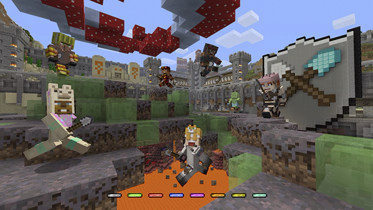

Minigames
The Minecraft Minigames were a highlight of the Console Edition. This feature introduced three unique modes: Battle, Tumble, and Glide. Each mode came with beautifully crafted maps and immersive music. With these three distinct game modes, there was something for everyone. Plus, the option to play with up to 8 players online made Minigames one of the Console Edition’s best additions.
_____________________________
Battle Minigame
The Battle minigame was 4J Studios' exciting take on PvP for consoles, providing a fun and
competitive experience for players. Each round features a choice of 21 different maps, each
designed to offer unique challenges. Players start in a circle around a central area filled with
chests containing weapons and food. As the countdown ends, everyone rushes to the middle to grab
supplies, but they only have 10 seconds of immunity before the battle begins, making everyone
rush to get away.
In addition to the central chests, there are extra loot chests scattered around the arena. These
often contain better items and are placed in hard-to-reach spots high up, adding an exciting
element of risk. Once the battle starts, it’s classic PvP action—anything goes! Players can use
TNT, poisoned arrows, and other strategies to take out their opponents.
Players can team up with others to increase their chances of winning or choose to fight alone
for a greater challenge. With its fast-paced gameplay and opportunities for clever tactics, the
Battle minigame is perfect for aggressive players eager to dominate the arena.
_______________________
Tumble Minigame
Tumble is Minecraft's take on Spleef, where the goal is to destroy the blocks, your opponents are
standing on to make them fall into lava. This game has two primary modes: Snowball and Shovel.
In Shovel mode, players stand on a single layer of blocks. If opponents break those blocks, you
will fall directly into the lava—no exceptions. Using the shovel, you can instantly break any
block beneath you.

In Snowball mode, players have multiple layers of blocks to land on, with a spacing of 5 to 7
blocks between each layer. Here, you throw snowballs at opponents, which deal knockback when
they hit, but can also break blocks if aimed correctly. While you can still break blocks by
hitting them, however shooting them is a lot more fun.
Additionally, when adjusting the round settings, you can enable two extra options. The first is
splash potions that grant levitation; when thrown, they allow you to float for a limited time.
The second option is rockets that explode on impact. If timed perfectly, you can shoot a rocket
beneath you and jump to achieve a super jump.
_________________________
Glide Minigame
Glide is the final minigame added to Minecraft Legacy Edition, and it features an original game
mode created specifically for consoles. In Glide, players start from a high vantage point with a
panoramic view of the landscape below. The objective is to navigate between obstacles, such as
trees and buildings, without touching the ground.
You begin with three lives; if you hit the ground and come to a stop, you'll lose all your lives
and respawn at the last checkpoint, which is marked by two beacons. If you collide with a wall
at high speed without completely stopping, you'll only lose one life. The challenge lies in
balancing speed and agility to maneuver through tight corners without crashing or losing too
much altitude.
Scattered throughout the maps are speed boosts and updrafts. Speed boosts increase your
velocity, while updrafts lift you higher into the air. There are two game modes in Glide:
1. Time-Attack: This mode is straightforward—the first player to cross the finish line wins. If one
player reaches the goal, the remaining players have only 30 seconds to finish; otherwise, they
lose the round.
2. Score-Attack: Players fly through three sizes of rings—green, yellow, and blue—scattered
around the map. Green rings are the largest and easiest to navigate, offering 1 point, while
blue rings are more challenging but yield 3 points. If two players finish with the same score,
the one with the better time is declared the winner.
The maps are filled with shortcuts that can provide a significant advantage, although some are
nearly impossible to utilize effectively. This makes Glide an excellent choice for speedrunning.
Fun fact: Glide is the only minigame you can play solo. In solo mode, you can see a ghost of
your previous attempts each time you glide, allowing you to compete against your own best score.